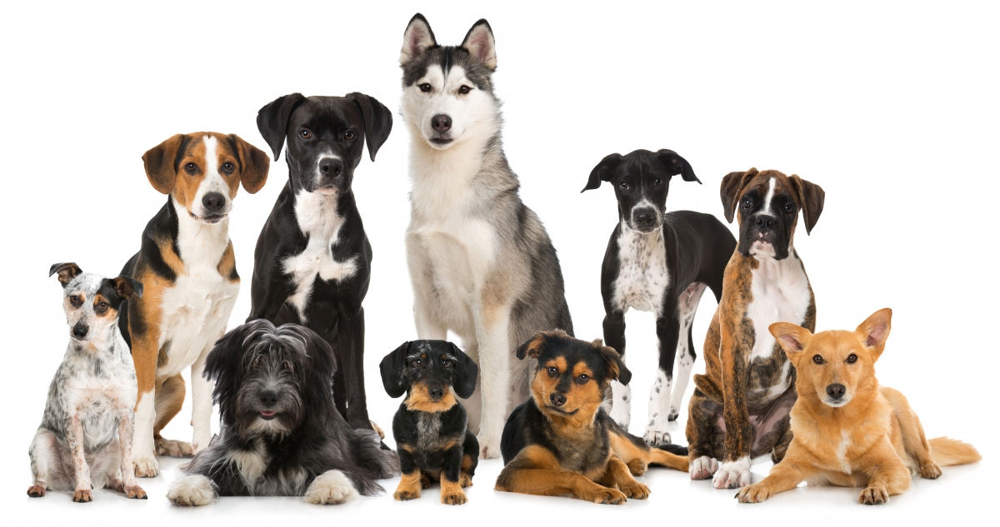
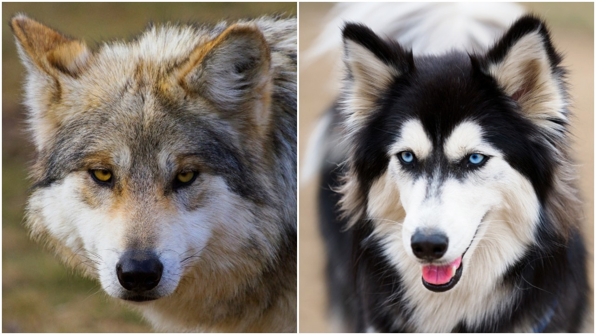

Садржај ове странице: Увод, Порекло.

Пас, такође познат и као домаћи пас (лат. Canis lupus familiaris), је припитомљени сисар (Mammalia) из породице паса (Canidae).
Археолошки налази доказују да пас најмање 9.000 година живи уз човека, иако постоје индиције да се тај период продужи на читавих 14.000 година. Фосилни остаци показују да су преци модерног пса живели уз човека још пре 10.000 година.
Данас постоји око 40 милиона паса и око 800 раса (што је више него било која друга врста животиње) најразличитијих димензија, физиономије и темперамента, и које представљају најразличитије веријетете боје и врсте длаке. Пас је уско повезан са човеком, коме служи као кућни љубимац, као чувар, водич, овчар и др. Пас је једна од најраспрострањенијих животиња на свету чију популарност надмашује једино мачка (Felis catus).
Пас је подврста сивог вука (Canis lupus), за кога се верује да је директни предак пса. Најновија истраживања потврђују да је пас био по први пут припитомљен на истоку Азије, највероватније у Кини. Такође, није сигурно да сви домаћи пси потичу од исте групе или се процес доместикације поновио више пута на више места.
Пси, као и људи, су високо друштвена бића и ова сличност их је временом зближила. Ова сличност је омогућила псима
јединствену позицију у животу човека. Лојалност и посвећеност коју пси демонстрирају као дeо њиховог природног
инстинкта унутар чопора, приближно одражава људску идеју о љубави, због чега их многи власници сматрају као
пуноправне чланове породице.
Исто тако, пси изгледа да виде своје власнике као чланове свог чопора, правећи само неколико (а можда и не правећи) разлике између својих власника и других паса. Пси могу имати различите улоге у људском друштву и често се тренирају као радни пси. Данас је можда најважнија улога пса као сапутника и пријатеља.
Пси су живели и радили са људима на много начина, па су због тога и заслужили титулу „човековог најбољег пријатеља“. Са друге стране, неке културе сматрају псе веома прљавим животињама, док их поједине употребљавају и за исхрану.

Постоји више мишљења о пореклу паса.
По једном су исти припитомљени пре 17 хиљада година, а по другој пре више од 150 хиљада година. Такође се разликује и питање животиње од које је настао пас. По једнима је у питању вук, по другима шакал, а по трећима којот. Претпоставља се да су почеци пријатељства између човека и пса настали као резултат међусобног удруживања номадских племена и чопора вукова/шакала, гонећи исту дивљач по истим територијама, захваљујући аналогним ловним техникама.
Ипак, разумна је и хипотеза да су се карактеристике савремених канида појавиле још прије 10 милиона година. Наиме, пре 10 милиона година, у Северној Америци се појављује Canis leophagus, најстарији представник рода Canis. Фрапантна је његова сличност са врстама које данас познајемо. Његова величина је као код којота, мождани капацитет је незнатно увећан у односу на претходне врсте, вилица му је типично псећа, а удови тркачког типа. У овом, још увек раном стадијуму еволуције, немогуће га је ипак везати за неку прецизну линију сродства, јер не постоји значајна разлика између предака вука, којота и шакала. Изгледа да је овога пута Canis leophagus, био тај који је прешао Берингов мореуз у правцу Евроазије и од тада се може следити његова еволуција у Европи. Canis cipio је први представник те еволуције, откривен у арагонским Пиринејима, у слојевима који датирају од пре 8 милиона година, он служи као образац канида старог света. Док изгледа да шакал и којот воде порекло од Canis cipio, први у старом, а други у новом свету, вук потиче из једне међуврсте, Canis etruscus, веома честе у Европи пре два милиона година.
Извор за овај материјал: Википедија.
Домаћи задатак: постављање сајта на интернет.
Остале странице: Историја паса, Интелигенција паса.